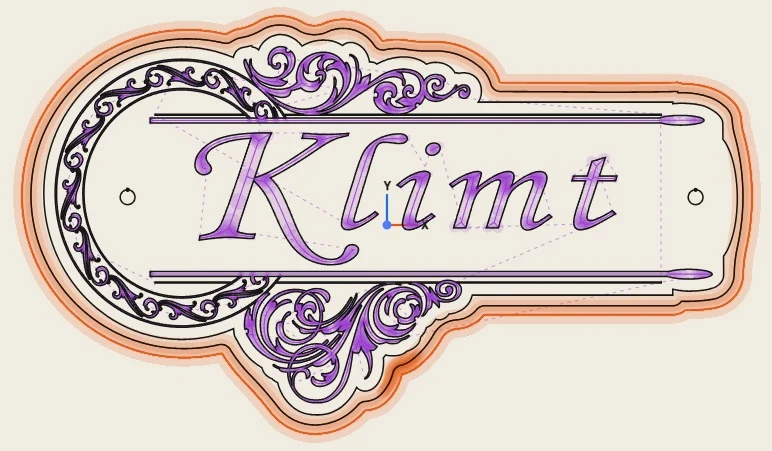
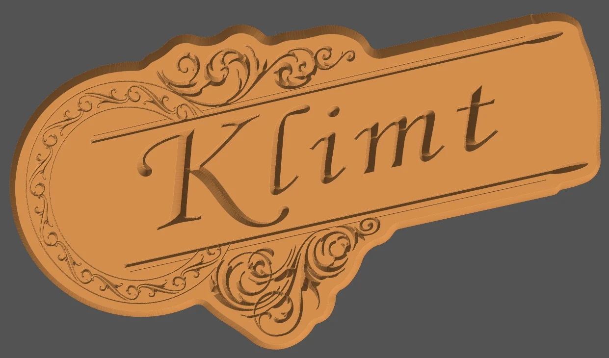
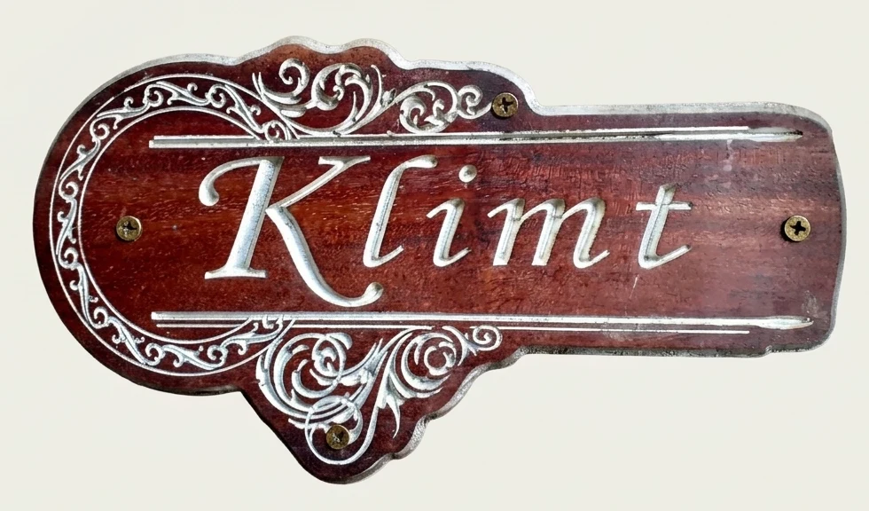

FAO 2,5D et reliefs 3D
Dessinez ou importez SVG, DXF, PDF et STL. Modelez un relief, puis usinez profils, poches, V-carving, perçages et finitions 3D.
Logiciel de FAO libre et gratuit pour fraiseuses CNC. Dessinez, importez vos cartes de hauteur et vos modèles STL, générez vos parcours d'outils et votre G-code, en ligne ou hors ligne.
Dessinez en 2D, la vue 3D suit en direct.


Dessinez ou importez SVG, DXF, PDF et STL. Modelez un relief, puis usinez profils, poches, V-carving, perçages et finitions 3D.
58 post-processeurs : GRBL, grblHAL, Mach3/4, LinuxCNC, UCCNC, MASSO… Simulation 3D avant d'usiner, 4ᵉ axe rotatif.
Fonctionne dans Chrome, Edge, Brave ou Safari. S'installe comme une application et marche sans connexion.
Ni compte, ni envoi : tout est calculé sur votre ordinateur. Vos projets sont de simples fichiers .copo.





Bois · V-carving et relief 3D · rehauts argent
Vous avez réalisé une pièce avec COPO ? Envoyez-nous une photo, si possible avec le dessin et la simulation : elle pourra figurer ici.
Envoyer ma réalisationLa vidéo se charge depuis YouTube quand vous cliquez dessus.
Rien à télécharger : ouvrez COPO une fois, puis installez-le depuis votre navigateur. Il aura sa propre fenêtre et son icône, ouvrira vos fichiers .copo et fonctionnera hors ligne.
Chrome, Edge ou Brave — Windows, Linux, macOS, Chromebook
Chrome
Safari
Pour un ordinateur d'atelier sans internet
COPO est gratuit et libre, et le restera. Il est développé par un luthier, pour le travail du bois et la lutherie, sur son temps libre.
Si COPO vous rend service à l'atelier, vous pouvez l'aider à grandir par un don ponctuel ou mensuel.